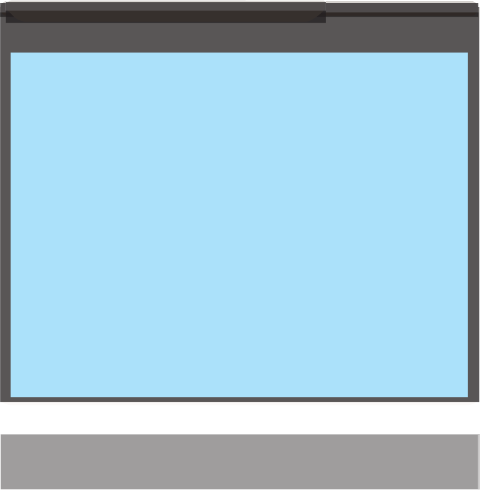

for Secondary Schools

#include <stdio.h> void addTen(int num) { num = num + 10; // Add 10 to the parameter


printf("Inside the function: num=%d\n",num);//Prints the updated value of num


}

int main() {


int x = 5;


// Before calling the function

printf("Before calling the function: x = %d\n", x);

// Calling the function with x as an argument

addTen(x);

// After calling the function

printf("After calling the function:x= %d\n",x);// x is unchanged in main


return 0;


}

Program example 4.13:


Demonstration of a function call by value in C

Output:


Before calling the function: x = 5
Inside the function: num = 5
After calling the function: x = 5
Referring to this code, the function addTen() takes a copy of the value of x as its parameter (num). Inside the function, num is updated, but this change does not affect x in the main() function because the function works with a copy of x (call by value).
After the function call, the value of x in main() remains the same.
Call by reference
In the call-by-reference method, a function receives the address of an argument instead
of its value. This allows the function to access and modify the original variable. To use this approach in C, you pass pointers to the function, and its parameters must be declared as pointer types.